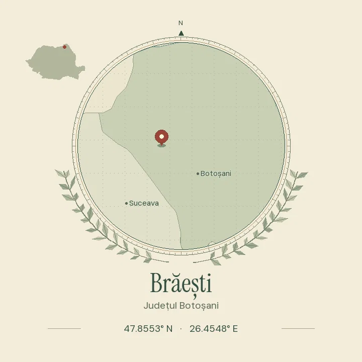
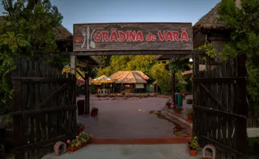
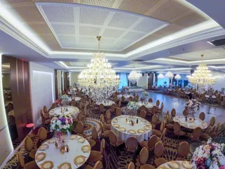
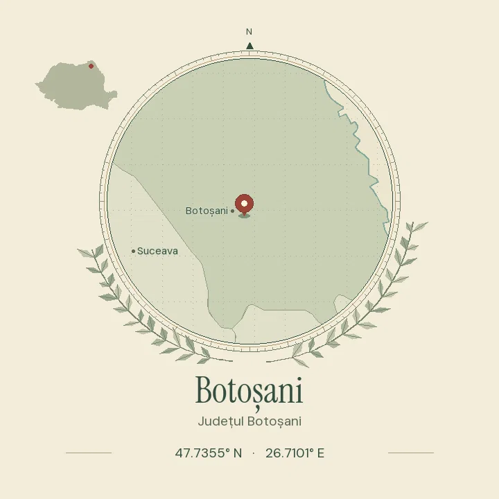
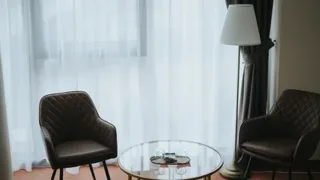
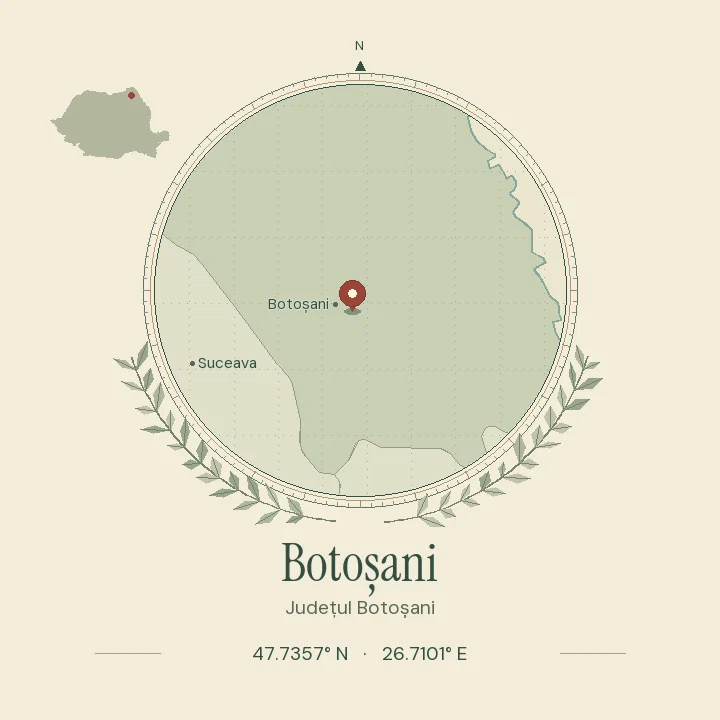
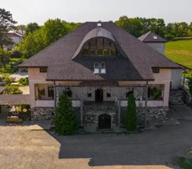
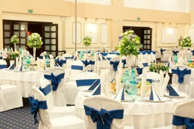
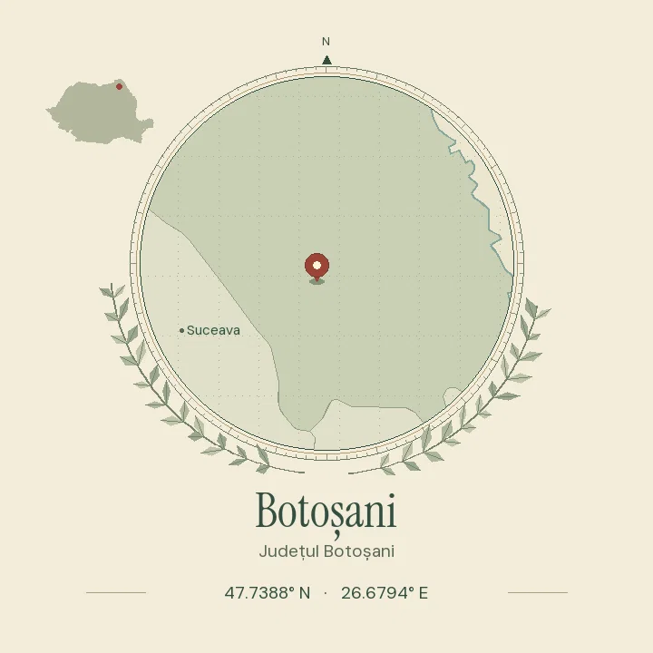

Locații de nuntă în județul Botoșani
- locații în director
- 9
- cu cazare în registrul SITUR
- 3
- medie ponderată Google
- 4,3 / 5
- evaluări Google
- 8.025
Cum alegi unde mergi la vizionare
În selecția pentru Botoșani veți întâlni și adrese din afara municipiului, între care Bălușeni. Dacă preferați liniștea unei proprietăți în afara orașului, notați din prima discuție cine deschide poarta pentru montaj și până la ce oră se poate folosi exteriorul.
Un participant la o nuntă de la Casa Lux descrie un eveniment real în municipiu. Puteți începe discuția de la salonul folosit atunci și să cereți apoi fotografii ale exteriorului în configurația dorită. Dacă mai aveți o adresă favorită în Bălușeni, comparați cine pune mobilierul și cine strânge decorațiunile în ambele oferte. Un preț de salon singur nu vă arată aceste diferențe.
Două adrese pentru o zi de vizionări
Pe hartă, între aceste două proprietăți sunt 5,1 km în linie dreaptă. Deschide indicațiile de drum din fișe ca să vezi traseul pe șosea înainte de a stabili a doua întâlnire.
- Conacul Zaicesti · Street Principala 172 Zaicesti, 717031 Comuna Bălușeni
- Hotel & Restaurant · Strada I.C. Bratianu FN, Botoșani
Explorează după localitate
Toate locațiile din județul Botoșani
Ordinea ține cont de nota Google și de numărul evaluărilor. Cum calculăm ordinea

Hartă ilustrată Brăești · Reper istoric
Conacul Capri
Conacul Capri, Brăeşti. Un oaspete povestește despre o vizită de duminică la conacul din Brăești și folosește Dorohoiul drept reper.
24 Ianuarie 51, 717035 Brăeşti+40 745 175 505
Fotografie a locației · Sursa fotografiei Botoșani · Hotel
Hotel Lebăda
Hotel Lebăda, Botoșani. Un călător străin amintește cumpărături de Crăciun de la hotel, printre care sarmale și ciorbă de burtă.
Șoseaua Iașului 5, Botoșani+40 751 222 259
Fotografie a locației · Sursa fotografiei Botoșani · Bed & Breakfast
Complex "Casa Lux"
Saloane de până la 450 și 260 de locuri plus terasă pentru 130, pe Calea Națională 167, Botoșani. Nunți lăudate, dar și reclamații despre servire lentă.
Calea Națională 167, 710001 Botoșani+40 231 510 510
Hartă ilustrată Botoșani · Hotel
Hotel & Restaurant
Hotel cu restaurant la periferia Botoșaniului, cu porții generoase; recenziile semnalează zgomot de la petreceri și o servire inegală.
Strada I.C. Bratianu FN, Botoșani+40 231 517 131
Fotografie a locației · Sursa fotografiei Botoșani · Hotel
Vila Turistică FABIAN
Vila Turistică FABIAN. Într-o relatare despre Vila Fabian, vizitatorul își amintește camera bine întreținută și primirea atentă a personalului.
Strada Mihail Kogălniceanu 72, Botoșani+40 749 012 221
Hartă ilustrată Botoșani · Restaurant
Rediu Hotel & Restaurant
Rediu Hotel & Restaurant. Un cuplu care a organizat nunta la Rediu descrie sala și prezentarea preparatelor drept puncte importante ale serii.
Strada I.C. Brătianu, 710378 Botoșani+40 755 034 555
Fotografie a locației · Sursa fotografiei Comuna Bălușeni · Restaurant
Conacul Zaicesti
Grădină de vară pentru nunți cu până la 200 de invitați în Zăicești, Botoșani. Recenzii recente critice la servire; ce să ceri la vizionare.
Street Principala 172 Zaicesti, 717031 Comuna Bălușeni+40 755 400 207
Fotografie a locației · Sursa fotografiei Botoșani · Hotel
Hotel Rapsodia
Hotel central în Botoșani cu salon de până la 250 de persoane și unul de 40. Camerele vechi sunt criticate; aripa renovată e mai apreciată.
Strada Cuza Vodă 4, 717113 Botoșani+40 231 511 911
Hartă ilustrată Botoșani · Bed & Breakfast
Pensiunea Bianca
Pensiunea Bianca, Botoșani. Ar ajuta mai ales familiile care își duc copiii la culcare înainte de sfârșitul petrecerii.
Strada Ion Luca Caragiale 11, Botoșani+40 231 513 007
Întrebări despre locațiile din județul Botoșani
Unde pot dormi invitații în județul Botoșani?
În registrul de cazare SITUR găsim Hotel Lebăda (58 de locuri de cazare), Vila Turistică FABIAN (28 de locuri de cazare), Hotel Rapsodia (270 de locuri de cazare). Verifică ce camere sunt libere pentru noaptea evenimentului.
Ce proprietăți din județul Botoșani au grădină sau terasă?
Hotel Lebăda (grădină, terasă); Complex "Casa Lux" (grădină, terasă); Vila Turistică FABIAN (terasă). Cere administratorului condițiile de folosire pentru o petrecere privată.
Care locație din județul Botoșani are cele mai multe evaluări Google?
Rediu Hotel & Restaurant are 1.995 de evaluări în profilul Google folosit la documentare. Evaluările acoperă și alte experiențe la proprietate, inclusiv vizitele fără eveniment.
Unde apare o intrare accesibilă în județul Botoșani?
Profilurile Google indică o intrare accesibilă la Conacul Capri, Rediu Hotel & Restaurant, Conacul Zaicesti. Pentru o cununie în exterior, cere detalii despre traseul dintre intrare și zona cu scaune.